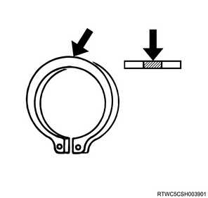

Reverse gear and 5th gear reassembly (MUA)
1. Intermediate plate installation
1. Install the intermediate plate to the gear assembly.
Note
- Connect the counter gear with the main shaft.
- Install the main shaft assembly and the counter gear to the holding fixture.
- Install the holding fixture to the base.

SST: 5-8840-2160-0 - holding fixture
SST: 5-8840-0003-0 - base
- Holding fixture
- Base
2. Install the snap ring to the main shaft using a snap ring pliers.
2. Bearing plate installation
1. Install the bearing plate to the intermediate plate.
Note
- Install a new bolt.
- Tighten it to the specified torque using TORX bit wrench, T-45.
Tightening torque： 15 N・m { 1.5 kgf・m / 11 lb・ft }

SST: 5-8840-0047-0 - torx bit wrench

- TORX bit wrench, T-45
3. Reverse needle bearing installation
1. Install the reverse needle bearing to the main shaft.
4. Reverse gear installation
1. Install the reverse gear to the main shaft.
Note
- Install the reverse gear and reverse block ring together to the main shaft.
5. Revers - 5th synchronizer assembly reassembly
1. Assemble the reverse - 5th synchronizer assembly.
Note
- Install the clutch hub face toward the sleeve groove (rear side) on the outer circumference.
- Confirm that the clutch hub and sleeve slide smoothly.
- Sleeve groove
- Clutch hub face
Note
- Confirm that the insert is installed to the groove of the clutch hub correctly.
- Confirm that the insert spring is installed to the insert correctly.
- Set the insert spring in such a way that the openings of the spring face the different directions.

- Insert
- Insert spring
- Sleeve
- Clutch hub
6. Revers - 5th synchronizer assembly installation
1. Install the reverse - 5th synchronizer assembly to the main shaft.
Note
- Install in such a way that the one with the wider boss width faces the reverse gear.
- Engage the 1st - 2nd and 3rd - 4th synchronizers with the 1st and 3rd gears respectively to prevent the main shaft from rotating.
2. Install the mainshaft hub nut to the main shaft using special tool.
Note
- Tighten a new main shaft nut to the specified torque using the main shaft nut wrench.
Tightening torque： 137 N・m { 14 kgf・m / 101 lb・ft }
SST: 5-8840-2156-0 - main shaft nut wrench
- Main shaft nut wrench
Note
- After installation, crimp the main shaft hub nut using a punch.
7. Needle bearing installation
1. Install the needle bearing to the main shaft.
8. 5th block ring installation
1. Install the 5th block ring to the main shaft.
9. 5th gear installation
1. Install the 5th gear to the main shaft.
10. Counter reverse gear installation
1. Install the counter reverse gear to the counter shaft.
Note
- Apply the recommended lubricating oil to the reverse gear and the counter reverse gear.
- Install the reverse gear in such a way that the projection of the reverse gear faces the intermediate plate.
11. Counter 5th gear installation
1. Install the counter 5th gear to the counter shaft.
12. Counter bearing snap ring installation
1. Install the bearing to the counter shaft.
2. Install the counter bearing snap ring to the counter shaft using a snap ring pliers.
Note
- Select the snap ring that creates the minimum clearance between the bearing and the snap ring.
Note
- 6 types of snap rings are selectable.
- The snap ring can be identified with a color code and dash code.

Standard： 0.00 to 0.15 mm { 0.0000 to 0.0059 in }
| Snap ring thickness | Identification color |
| ： 1.1 mm { 0.043 in } | White |
| ： 1.2 mm { 0.047 in } | Yellow |
| ： 1.3 mm { 0.051 in } | Blue |
| ： 1.4 mm { 0.055 in } | Pink |
| ： 1.5 mm { 0.059 in } | Green |
| ： 1.6 mm { 0.063 in } | Brown |
Note
- Completely insert the counter bearing snap ring into the snap ring groove of the counter shaft using snap ring pliers.
13. Reverse idle gear installation
1. Install the reverse idle gear to the intermediate plate.
Note
- Install the reverse idle shaft, reverse idle gear, thrust washer, and idle shaft pin to the reverse idle gear assembly.
- Install the thrust washer so that the oil groove faces the gear.
2. Install the snap ring to the idle shaft using a snap ring pliers.
Note
- Select a snap ring that creates the minimum clearance between the intermediate plate and the snap ring.
Note
- 3 types of snap rings are selectable.
- A snap ring can be identified with a color code.
Standard： 0.00 to 0.15 mm { 0.0000 to 0.0059 in }
| Snap ring thickness | Identification color |
| ： 1.2 mm { 0.047 in } | White |
| ： 1.3 mm { 0.051 in } | Yellow |
| ： 1.4 mm { 0.055 in } | Blue |
Note
- Completely insert the counter bearing snap ring into the snap ring groove of the counter shaft using snap ring pliers.
14. Thrust washer installation
1. Install the thrust washer to the main shaft.
Note
- Measure the clearance between the 5th gear and the thrust washer with a feeler gauge.
Standard： 0.10 to 0.25 mm { 0.004 to 0.010 in }
- Clearance
Note
- Select an appropriate thrust washer from the table.
- 4 types of thrust washer sizes are selectable.
- A thrust washer can be identified with a color code.

| Thrust washer thickness | Identification color | Width A | Clearance |
| ： 7.9 mm { 0.311 in } | White | ： 8.05 to 8.10 mm { 0.317 to 0.319 in } | ： 0.15 to 0.25 mm { 0.006 to 0.010 in } |
| ： 8.0 mm { 0.315 in } | Yellow | ： 8.1 to 8.2 mm { 0.319 to 0.323 in } | ： 0.10 to 0.25 mm { 0.004 to 0.010 in } |
| ： 8.1 mm { 0.319 in } | Green | ： 8.2 to 8.3 mm { 0.323 to 0.327 in } | ： 0.10 to 0.25 mm { 0.004 to 0.010 in } |
| ： 8.2 mm { 0.323 in } | Blue | ： 8.30 to 8.36 mm { 0.327 to 0.329 in } | ： 0.10 to 0.21 mm { 0.004 to 0.008 in } |
Note
- Apply BESCO L-2 grease to the thrust washer and lock ball and install them to the main shaft.
15. Thrust plate installation
1. Install the thrust plate to the main shaft.
16. Retainer installation
1. Install the retainer to the main shaft.
Note
- The following applies to 2WD.
- Install the retainer snap ring to the main shaft.
17. Speedometer drive gear installation
Note
- The following applies to 2WD.
1. Install the speedometer drive gear to the main shaft.
Note
- Install the clip.
2. Install the snap ring to the main shaft using a snap ring pliers.
18. Main shaft rear bearing installation
1. Apply the oil to the main shaft rear bearing.
Note
- Apply the recommended lubricating oil to the outer and inner surfaces of the main shaft rear bearing.
2. Install the main shaft rear bearing to the main shaft using special tool.
Note
- Use a bearing installer.
SST: 5-8840-2159-0 - bearing installer
- Bearing installer
Note
- The following applies to 4WD.
3. Apply the oil to the oil seal collar.
Note
- Apply the recommended lubricating oil to the inner circumference oil seal collar.
4. Install the oil seal color to the main shaft using special tool.
Note
- Use a bearing installer.
SST: 5-8840-2159-0 - bearing installer
19. Main shaft snap ring installation
1. Install the main shaft snap ring to the main shaft using a snap ring pliers.